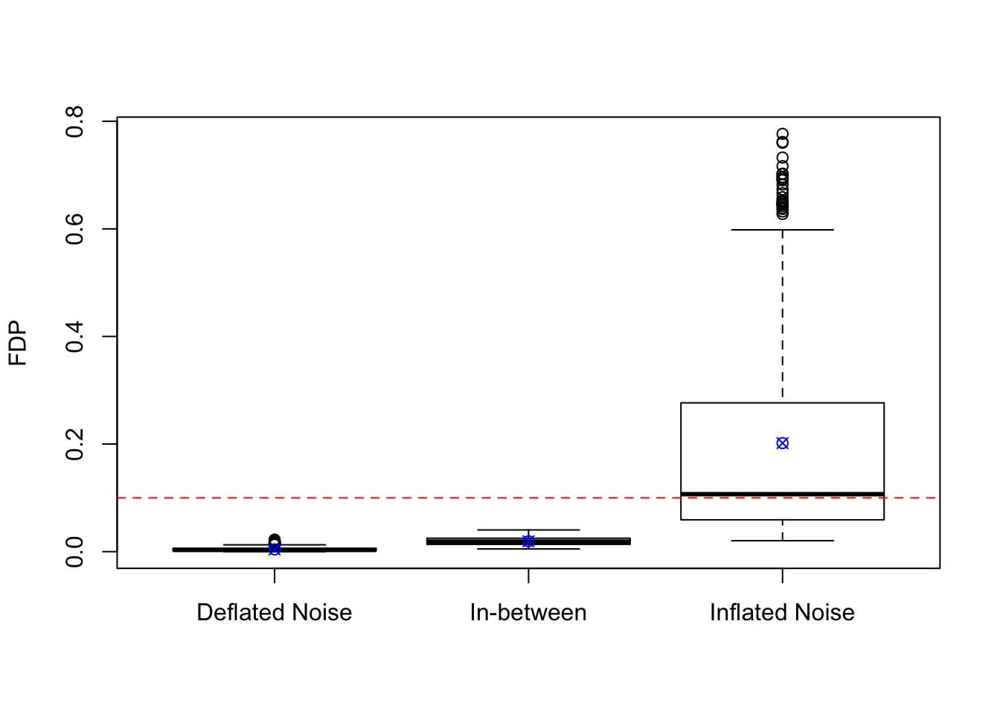

Last updated: 2018-05-14
workflowr checks: (Click a bullet for more information) ✔ R Markdown file: up-to-date
Great! Since the R Markdown file has been committed to the Git repository, you know the exact version of the code that produced these results.
✔ Environment: empty
Great job! The global environment was empty. Objects defined in the global environment can affect the analysis in your R Markdown file in unknown ways. For reproduciblity it’s best to always run the code in an empty environment.
✔ Seed:
set.seed(20180511)
The command set.seed(20180511) was run prior to running the code in the R Markdown file. Setting a seed ensures that any results that rely on randomness, e.g. subsampling or permutations, are reproducible.
✔ Session information: recorded
Great job! Recording the operating system, R version, and package versions is critical for reproducibility.
✔ Repository version: ec7d8e0
wflow_publish or wflow_git_commit). workflowr only checks the R Markdown file, but you know if there are other scripts or data files that it depends on. Below is the status of the Git repository when the results were generated:
Ignored files:
Ignored: .DS_Store
Ignored: .Rapp.history
Ignored: .Rhistory
Ignored: .Rproj.user/
Ignored: analysis/benjamini_simulation_2_cache/
Ignored: analysis/benjamini_simulation_cache/
Ignored: code/.DS_Store
Ignored: docs/.DS_Store
Ignored: docs/figure/.DS_Store
set.seed(1995)
n <- 1e4
d <- 5
m <- 1000
B <- matrix(rnorm(n * d), n, d)
normalize.constant <- sqrt(rowSums(B^2) + 1)
Z <- replicate(m,
(colSums(t(B) * rnorm(d)) + rnorm(n)) / normalize.constant
)
sd.Z <- apply(Z, 2, sd)
group <- cut(sd.Z, breaks = c(0, 0.95, 1.05, Inf), labels = c("Deflated Noise", "In-between", "Inflated Noise"))
theta <- c(rep(c(-1, 1) * 3, each = 0.05 * n), rep(0, 0.9 * n))
X <- theta + Z
p <- 2 * pnorm(-abs(X))q <- 0.1
p.BH <- apply(p, 2, p.adjust, method = "BH")
BH.rej <- apply(p.BH, 2, function(x){x <= q})FDP.fun <- function (rej.id, theta) {
sum(theta[rej.id] == 0) / max(1, length(theta[rej.id]))
}
FDP <- apply(BH.rej, 2, FDP.fun, theta)## Boxplot of FDP for each group
boxplot(FDP ~ group, ylab = "FDP")
abline(h = q, lty = 2, col = "red")
points(1 : 3, tapply(FDP, group, mean), col = "blue", pch = 13)
| Version | Author | Date |
|---|---|---|
| fd221ca | Lei Sun | 2018-05-12 |
## Mean of FDP for each group
tapply(FDP, group, mean)Deflated Noise In-between Inflated Noise
0.004106679 0.019284901 0.201782975 ## sd of FDP for each group
tapply(FDP, group, sd)Deflated Noise In-between Inflated Noise
0.003967142 0.008211723 0.198618104 ## 95% CI of the mean of FDP for each group
tapply(FDP, group, function(x){t.test(x)$conf.int})$`Deflated Noise`
[1] 0.003757402 0.004455956
attr(,"conf.level")
[1] 0.95
$`In-between`
[1] 0.01802648 0.02054332
attr(,"conf.level")
[1] 0.95
$`Inflated Noise`
[1] 0.1804688 0.2230972
attr(,"conf.level")
[1] 0.95## 95% CI of the mean of FDP overall
t.test(FDP)$conf.int[1] 0.06391033 0.08218067
attr(,"conf.level")
[1] 0.95sessionInfo()R version 3.4.3 (2017-11-30)
Platform: x86_64-apple-darwin15.6.0 (64-bit)
Running under: macOS High Sierra 10.13.4
Matrix products: default
BLAS: /Library/Frameworks/R.framework/Versions/3.4/Resources/lib/libRblas.0.dylib
LAPACK: /Library/Frameworks/R.framework/Versions/3.4/Resources/lib/libRlapack.dylib
locale:
[1] en_US.UTF-8/en_US.UTF-8/en_US.UTF-8/C/en_US.UTF-8/en_US.UTF-8
attached base packages:
[1] stats graphics grDevices utils datasets methods base
loaded via a namespace (and not attached):
[1] workflowr_1.0.1 Rcpp_0.12.16 digest_0.6.15
[4] rprojroot_1.3-2 R.methodsS3_1.7.1 backports_1.1.2
[7] git2r_0.21.0 magrittr_1.5 evaluate_0.10.1
[10] stringi_1.1.6 whisker_0.3-2 R.oo_1.21.0
[13] R.utils_2.6.0 rmarkdown_1.9 tools_3.4.3
[16] stringr_1.3.0 yaml_2.1.18 compiler_3.4.3
[19] htmltools_0.3.6 knitr_1.20 This reproducible R Markdown analysis was created with workflowr 1.0.1